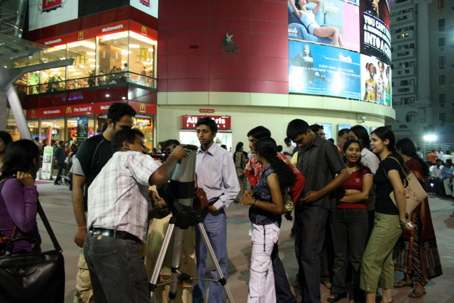
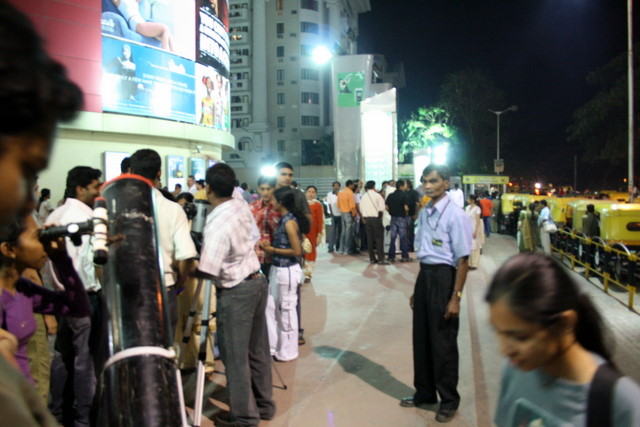

Sidwalk Astronomy Session @ Forum Mall : International Astronomy Day, 2007
By p6; Published 02 May 2007
It was a fitting tribute to the spirit of astronomy as hundreds of onlookers and bystanders queued up to take a peek at the wonders of the celestial sphere on the ocassion of the International Astronomy Day on April 21st.
The venue picked was the bustling premises of The Forum Mall, Koramangala, Bangalore. Unlike most other outreach events of the BAS, this one saw diverse groups of individuals with hardly anything in common. The equipment consisting of two 6" equatorials, a 5" alt-az and a 12" Dob were all put up at the Koramangala entrance of the mall. BAS Volunteers included Hemant, Amar, Rakesh, Vasudev, Naveen and I. The event began at around 6PM.

Whilst initial thoughts about our artillery of telescopes were anything from Machine guns and cannons unto product demos, curiosity got the better of the people and slowly sizeable crowds gathered around each telescope. It was however, still daylight and all telescopes were henceforth promptly pointed at the crescent moon high up in the sky. The detail visible took absolutely no time to evoke frenzied and excited reactions amogst those who got a peek. The exclamations and people rushing back into the queue for seconds only spurred more people to join in.Slowly the crowds came into their own, recovering from the initial bit of discomfort expected at an atypical event. Questions regarding the event and our credentials followed and we promptly introduced ourselves followed up with a briefing about the significance of the day. There also were our acquintances and other familiar faces who were pleasantly surprised with the event happening and took to the queues immideately to get a peep at the moon.

The menu for the night was restricted to moon and saturn and the latter was trained on later in the evening after the sky darkened up considerably. The lights at the mall were far too eye piercing to even allow bright messiers to be seen and hence the decision. Saturn was the crowds' favourite much as it is around the world. Saturn lined up huge queues at the 12" Dob wherein it was viewed with a 4.8mm Nagler at roughly 270X magnification. Cassini division appeared barely resolved as all our views were through a thick layer of haze even as thicker clouds were situated perispaciously around the constellation of Leo.The clock ticked to 8:30 and the crowds kept pouring in but the last amogst the queues had to return disappointed as clouds played spoilsport yet again. Saturn was fully obscured by the clouds and the moon was by now behind the towering building. Much as people were disappointed at missing out, they also managed to understand the tussle between weather and clear sky so far as amatuer astronomy is concerned. This happened to be another of those ocassions where the clouds had got the better of it all.
The event concluded at around 9PM as we hauled our equipment back into the cars. Queries regarding forthcoming astro-outings have followed ever since and the wick of the die-hard enthusiasm we might've sparked has been really humbling even to ourselves. We'll sincerely hope to help all that are genuinely interested - in their astro endeavours and work to further popularise astronomy as a science and hobby.
21st April 2007 - to the lot of us, shall definetely rank amogst the more memorable of International astronomy days. We hope this is just the first line of more to come in the positive order of success. The event also happened to be convered by the news channel CNN IBN. The video and links to the original report are put up in this blog post.
Last but not least, Our sincere note of thanks to Sharath, Venkat, Sneha, Guru, Vinay, Gururaj, Narasimha Murthy, Rajeev, Shashi and the others who helped us manage the event. We owe a good chunk of this event's success to their efforts.